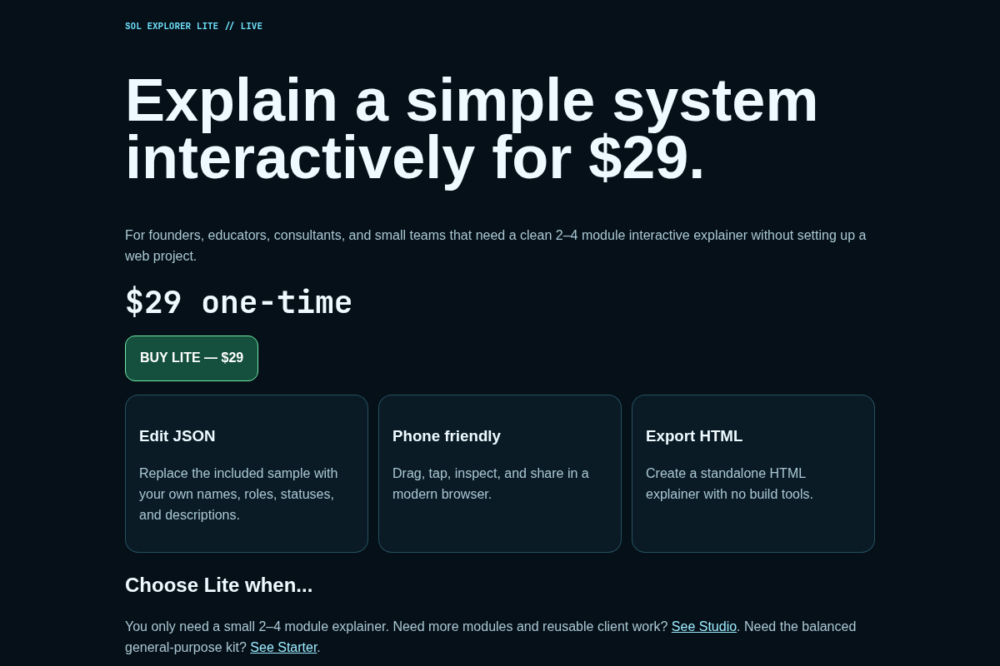

Explain a simple system for $29.
For individual makers, educators, freelancers, creators, founders, consultants, and small teams that need a clean 2–4 module interactive explainer without building a web app.
No subscription · instant digital delivery · standalone HTML export

Use it when a diagram is too static and a custom web build is overkill.
Hardware pitch
Give investors or customers a clickable overview of a small product architecture.
Classroom / training
Turn a 2–4 stage process into something people can inspect instead of reading a wall of text.
Consulting deliverable
Add an interactive HTML companion to a report, presentation, or simple client handoff.
What you actually receive.
- Self-contained browser template
- Editable JSON system data
- 2–4 clickable modules
- Touch-friendly navigation
- Brand name + accent configuration
- Standalone HTML export
- README and commercial-use license
Why buy it instead of building it?
Skip setup
No framework, package manager, hosting stack, or component library is required to start.
Skip interaction plumbing
The basic orbit/select/mobile interaction is already wired so you spend time on your content.
Keep the output portable
The exported explainer is a standalone HTML deliverable you can host or hand off.
Lite is deliberately small. If your system needs more than four modules, use the $79 Starter Kit instead of forcing the wrong edition.
One useful interactive deliverable can pay for the kit.
Buy Lite once, customize the included sample, export the HTML, and keep the file. No recurring subscription is attached to the product.
BUY SOL EXPLORER LITE — $29COMPARE EDITIONSCommercial truth.
SOL Explorer Lite is a visualization and technical-communication template. It is not CAD software, engineering simulation, a certified digital twin, or safety-critical engineering software. No customer-count, ROI, or ranking claims are made.